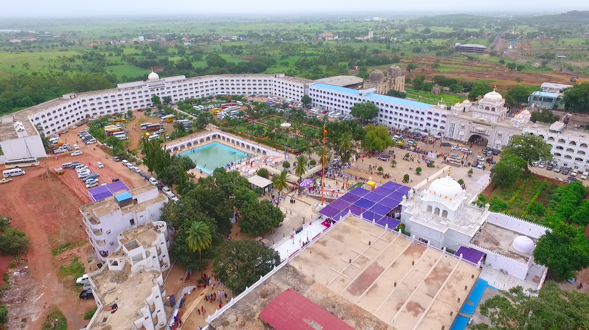
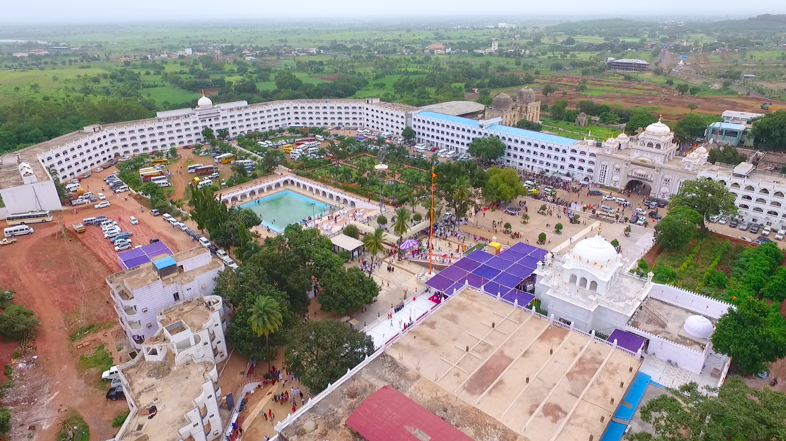

.jpg)
The name of Bidar appears to be derived from ‘bidiru’ which means bamboo. The place seems to have been known for bamboo clusters in the past, came to be known as ‘Bidaroor’ and then ‘Bidare’, ‘Bidar’. Though there are other versions of origin, the name ‘Bidarooru’ seems to be more near one and authenticated by contemporary literary works. Bidar is a hill-top city situated on the deccan plateau, in the north-eastern part of Karnataka state in India. It is the headquarters of the Bidar District.
Being located at the farthest of around 700 km (430 mi) from the state capital Bengaluru, it has been neglected by the state government for a long time. However, owing to its rich heritage, the city has a prominent place in the Archaeological Map of India. Picturesquely perched on the Deccan plateau, the Bidar fort is more than 500 years old and still standing strong. According to the book “Bidar Heritage” published by the state Department of Archaeology, Museums and Heritage, of the 61 monuments listed by the department, about 30 are tombs located in and around Bidar city. This explains the nickname – The City of Whispering Monuments. The heritage sites in and around Bidar have become the major attraction for film shooting in recent years with Bollywood making visits apart from kannada film industry.
Bidar is home for the second biggest Indian Air Force training centre in the country. The IAF Station Bidar is used for advanced jet training of prospective fighter pilots on BAe Hawk aircraft.
Bidar city is known for its Bidri handicraft products, and its rich history. Bidar is also considered one of the holiest place for Sikh pilgrimage. Unlike other places in the region, Bidar is the coldest and wettest place in north Karnataka. For the year 2009-10, Bidar was ranked 22nd among the cleanest cities in India, and 5th cleanest in Karnataka. SH4 passes through Bidar and the whole city is integrated with 4 lane road.
Ancient Karez System in the city have been recently discovered. The Karez (Qanat) is an underground network of aqueducts for water supply. The Bidar Karez, built in the 15th century, is more than 3 km (1.9 mi) long with 21 air vents. Underground canals, built to connect underground water streams, were meant to provide drinking water to civilian settlements and the garrison inside the Bidar fort. This was necessary in a city where the soil was rocky and drilling wells was difficult.
Taluk of bidar district
- Bidar
- Humnabad
- Basavakalyan
- Bhalki
- Kamalanagar
- Chitaguppa
- Aurad
 
